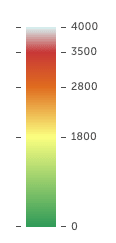

<!DOCTYPE html>
<html lang="es">
<head>
  <meta charset="UTF-8">
  <meta name="viewport" content="width=device-width, initial-scale=1.0">
  <title>Mapa con Mapbox</title>
  <script src="https://api.mapbox.com/mapbox-gl-js/v2.14.1/mapbox-gl.js"></script>
  <link href="https://api.mapbox.com/mapbox-gl-js/v2.14.1/mapbox-gl.css" rel="stylesheet" />
  <style>
    body { margin: 0; padding: 0; }
    #map { position: absolute; top: 0; bottom: 0; width: 100%; }
  </style>
</head>
<body>
  <div id="map"></div>

  <script>
    mapboxgl.accessToken = 'pk.eyJ1IjoiYWFsdmFyYWRvZzk5IiwiYSI6ImNscGE2OXdiazAzb2Uyam5scXEyd290MGsifQ.FLd594hW16FVg1-_fajFEQ';

    var map = new mapboxgl.Map({
      container: 'map',
      style: 'mapbox://styles/aalvaradog99/clpa5rir4002v01qu02qmat6t', // Reemplaza con tu estilo y usuario
      center: [-84.067,9.926],
      zoom: 8
    });
    // Agrega el PNG al mapa como un marcador (sustituye 'ruta/a/tu/imagen.png' por la ruta de tu imagen)
  new mapboxgl.Marker()
    .setLngLat([-85.117,9.449]) // Coordenadas del marcador
    .setPopup(new mapboxgl.Popup().setHTML('')) // Popup con la imagen
    .addTo(map);
  </script>
</body>
</html>
